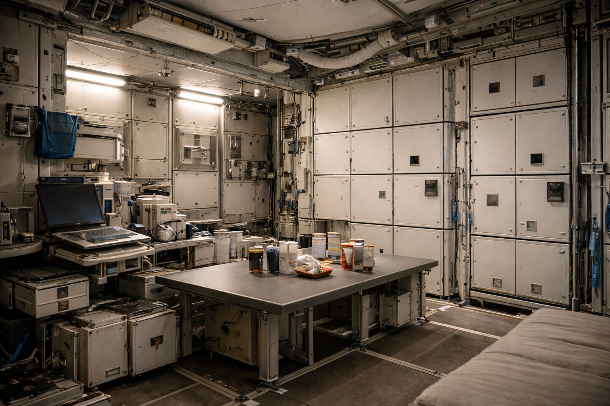

Design
User research, ergonomics, sketching, form development and telling the story visually.
Open to industrial design roles · Sydney
If you have to stop and work out how to use something, the design has failed. I aim for simple, and keep going until the product disappears into the task. I’m an industrial designer who takes it all the way to a working prototype: the form, the electronics, the firmware and the app.
Selected work
Interaction · Lighting · Prototyping
A stool for Sydney VIVID that strangers have to build together. It comes apart into four mesh walls and a top. Put it back together right and it lights up.
Honours thesis · Wearable · Construction
A wearable for tradies, designed around why they push back on new tech on site. I did the research, soft goods, cast silicone, electronics, firmware and app, and built it into a working 1:1 prototype. Shown privately while I sort out the IP.
View overview
Product · Soft goods · Making
A leather tool apron that rolls from a flat work surface into a compact pouch in one motion. Worked out with paper patterns, laser cutting and wet-moulding tests, then built by hand.
View case study
System design · Research
A sensory system that helps astronauts on long ISS missions deal with homesickness, monotony and mealtime fatigue. Includes journey maps and a personalised control system.
View case study
Circular design · SDG 12
A street light and a Dolphin torch, redesigned so they get fixed instead of thrown out: easy access, fewer parts, and parts that separate at end of life.
View case studyMedical · Ergonomics · Industry
Comfort-led form and skin-contact material work for a global medical tech company. Happy to walk hiring teams through it privately.
View overviewAbout
I’m an industrial designer based in Sydney, finishing Industrial Design (Honours) at Western Sydney University. I didn’t start in design. I studied electrical engineering, worked in construction, and did IT support and project work. That’s why I map the full user journey, every step, workaround and frustration, and design each interaction around the user, not the other way round.
My style is simple and functional, with one moment that stands out. I do my best work where the sketchbook, CAD and the workshop meet.
Electrical engineering study, construction and fit-out, and IT support. I know how things get built, wired and fixed.
Industrial and product design roles in Sydney, taking products from idea to working prototype.
What I bring
Most design grads hand over a render. I hand over something that works, and I can tell you how it’s wired, built and fixed.
User research, ergonomics, sketching, form development and telling the story visually.
I studied electrical engineering and worked on building sites. I prototype in real materials, and write the firmware and app that make them work.
Years in IT support and customer-facing work. I keep projects moving and explain decisions clearly to engineers, clients and the people who use the product.
For product work that needs to go from a napkin sketch to a working reality, please don’t hesitate to reach out.